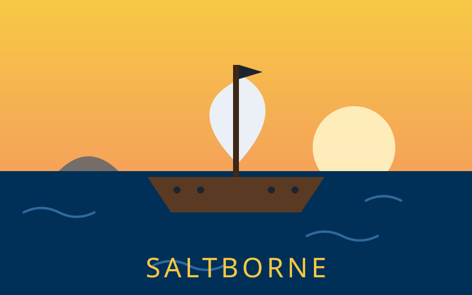
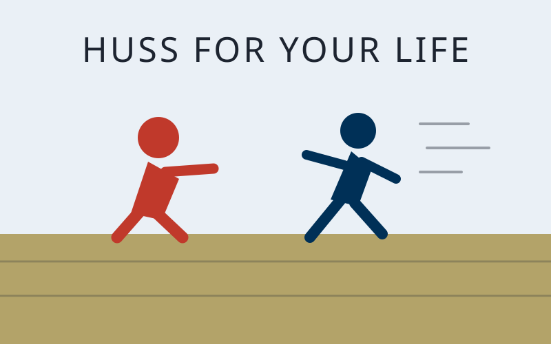

Discovery ProjectHardware
DIY Macro Keyboard
A 16 key programmable keyboard built on a Raspberry Pi Pico with Cherry MX switches and a case I 3D printed at the Hive. One key press runs a full shortcut.
Read More
A 16 key programmable keyboard built on a Raspberry Pi Pico with Cherry MX switches and a case I 3D printed at the Hive. One key press runs a full shortcut.
Read More
A large multiplayer pirate game in Roblox. Crews share one ship, loot islands and battle other crews with cannons. I wrote the full design document and started with a sailing prototype. Models are built in Blender.

A Roblox chase game where you run from a character through level after level. Players train on treadmills, unlock shoes, hatch pets and rebirth to get faster. Built to run on PC, mobile, console and VR.
Every project on this page follows the same loop. I figure out who it is for. I define the real problem. I plan and pick parts. I build a rough version fast. Then I test it and improve it.